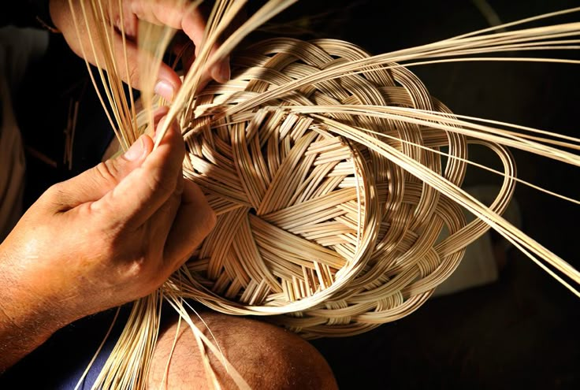
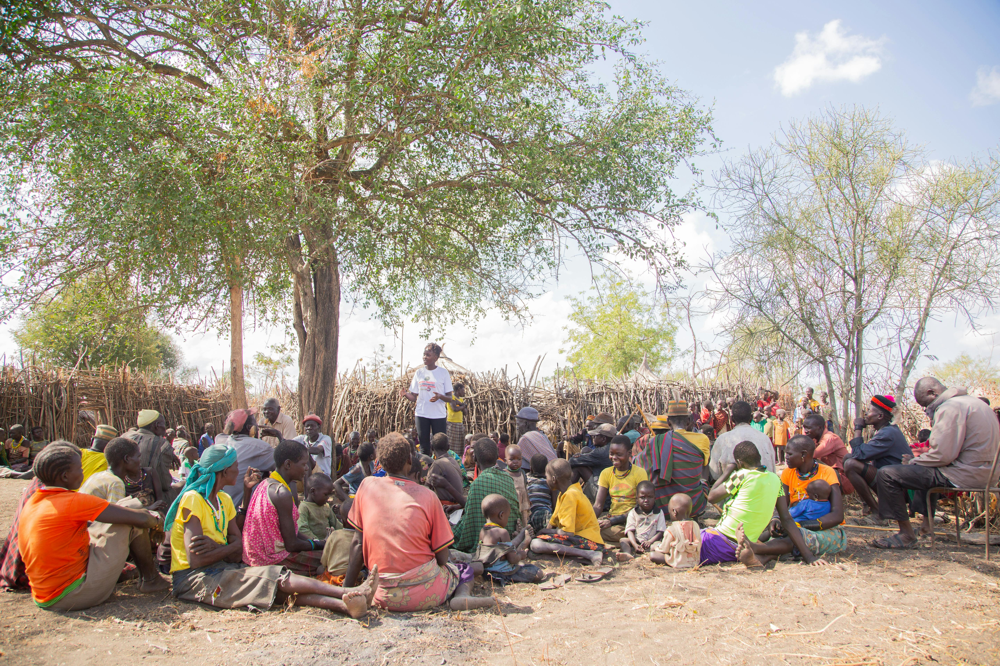
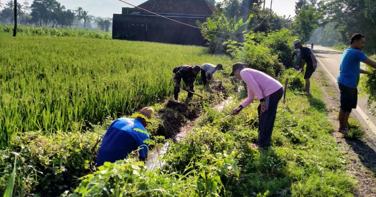
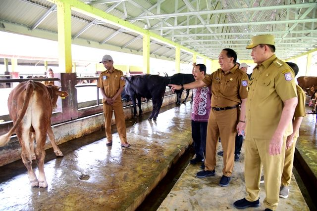
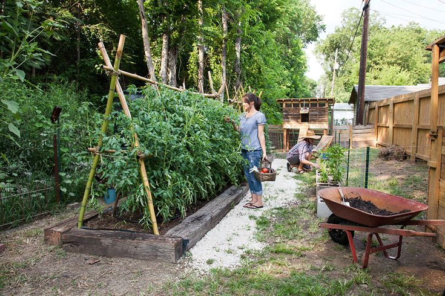
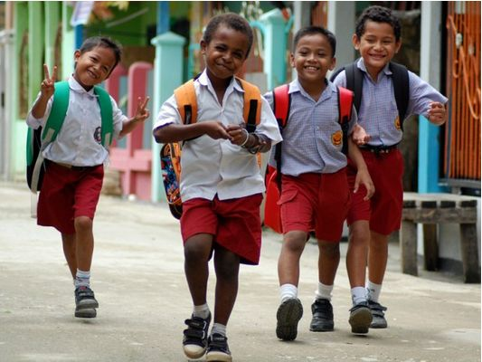
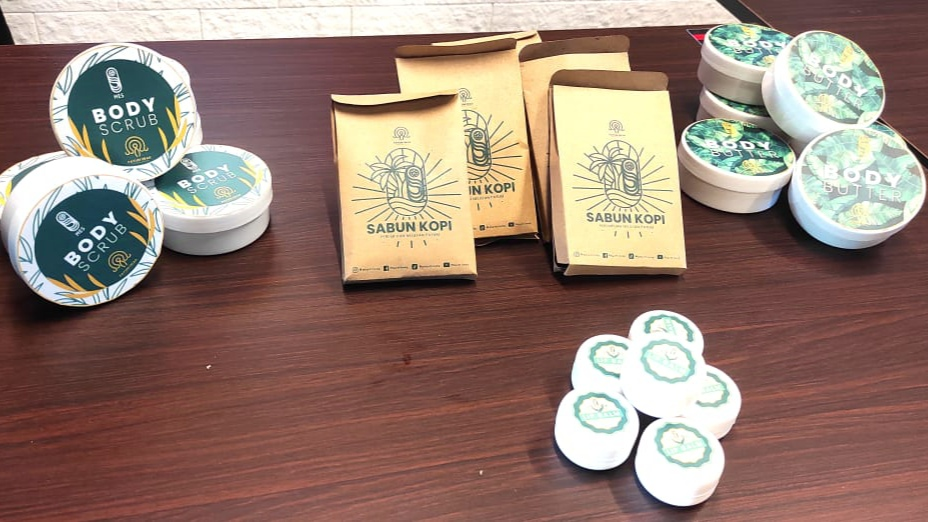
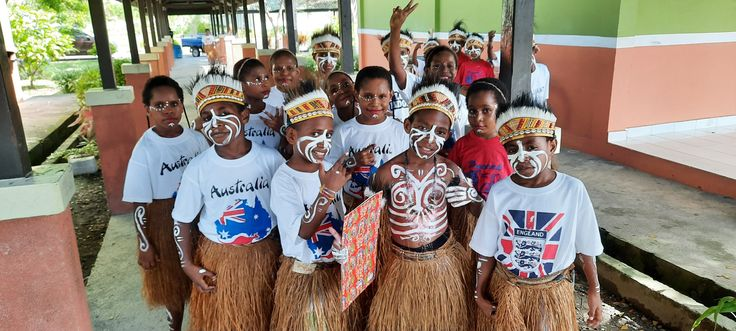

KAMPUNG LAPUA
Inovasi dan kolaborasi menciptakan wajah baru kampung. Rasakan Harmoni Tradisi dan Inovasi di Jantung Kampung Kami.
Mulai Jelajahi →
UMKM Bambu Lapua Menembus Pasar Internasional
Baca Selengkapnya →
Jadwal Musyawarah Warga Kampung Lapua Bulan Ini
Pemberitahuan: Seluruh warga diharap hadir dalam musyawarah rutin...

Gotong Royong Massal Bersihkan Saluran Irigasi
Baca Selengkapnya →FOKUS UTAMA KAMI
Potensi Unggulan Kampung

Peternakan Terintegrasi
Peternakan kambing dan sapi dengan sistem modern yang menjadi salah satu sumber pendapatan utama warga.

Pertanian Organik & Berkelanjutan
Target kami adalah menjadi kampung zero-emisi dengan fokus pada pertanian tanpa pestisida.

Program Pendidikan Digital
Eksplorasi program pelatihan dan bimbingan belajar digital untuk anak-anak kampung.

Inovasi Teknologi Tepat Guna
Ide, orang, dan inovasi yang mendorong kemajuan dan kesejahteraan di Kampung Lapua.

SEJARAH & WILAYAH
Visi Kami: Kampung Mandiri dan Modern
Kampung [Nama Kampung] berkomitmen untuk menjadi desa yang berbasis teknologi dan mandiri secara ekonomi. Kami percaya bahwa dengan memegang teguh tradisi sambil merangkul inovasi, kami dapat mencapai potensi maksimal kami.
- • Sejarah Panjang dan Kaya Budaya.
- • Didukung Kepala Kampung yang Progresif.
- • Administrasi Pemerintahan yang Transparan.
Berita & Kegiatan Lainnya
Informasi terbaru dan agenda kegiatan yang akan datang di kampung kami.

KEGIATAN
Semarak Perayaan HUT RI ke-79
Warga berbondong-bondong mengikuti lomba panjat pinang, karnaval budaya, dan berbagai perlombaan seru lainnya. Acara berlangsung meriah.
POTENSI
UMKM Kerajinan Bambu Tembus Pasar Ekspor
Produk kerajinan bambu dari Ibu Siti kini diminati oleh pembeli dari Jepang dan Amerika, menunjukkan kualitas produk lokal yang mendunia.
PENGUMUMAN
Jadwal Gotong Royong Bersih-Bersih Sungai
Diharapkan kehadiran seluruh warga RT 01-05 untuk kerja bakti pada hari Minggu, 20 Oktober. Fokus pada pembersihan area sekitar sungai.